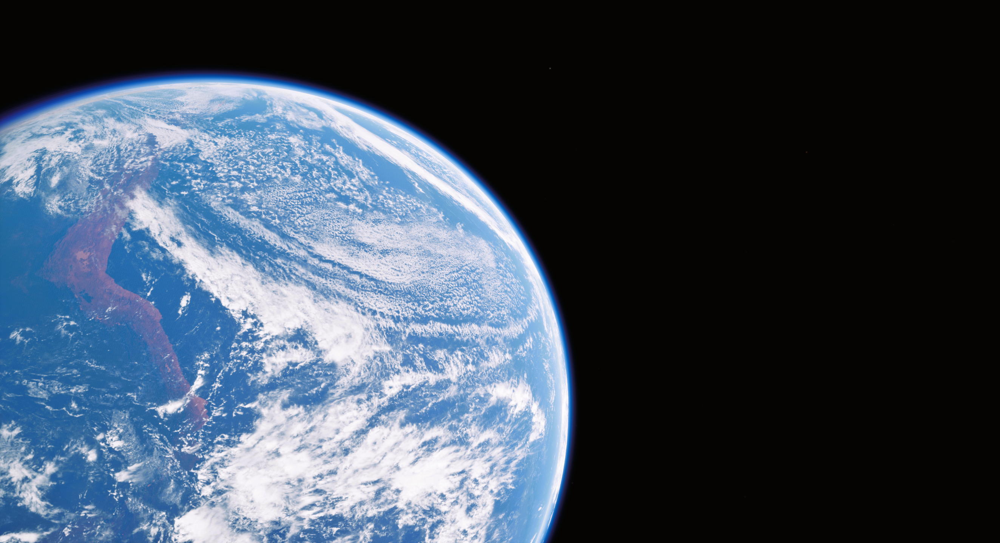
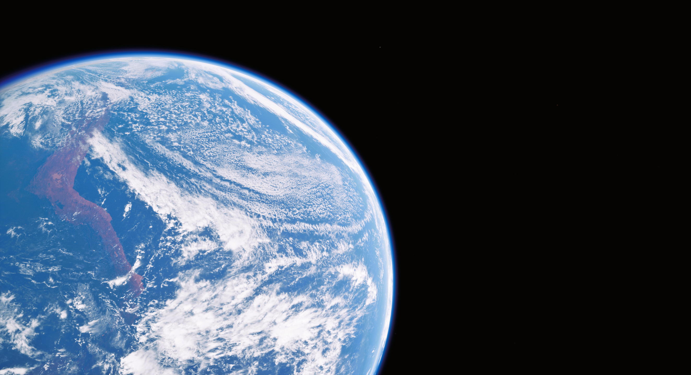

One year ago, was the death of a previous project of mine. The project had essentially collapsed under the weak foundation that was, spaghetti code that I made when first learning Unreal Engine. I should have seen this coming, or just have learned the engine in a different project. But it was because the issue was so difficult to solve, that I moved on, to start working on The Last Pioneers instead.
I have been making games since I was in 6th grade, which as of writing this, was about 5 years ago. It started off with crappy Roblox obby's, but my hunger to create grew and grew. And Roblox Studio was no longer suitable for the ideas I had in mind. Basically every project I have ever made has been highly ambitious, which is why, I hadn't worked on most them for no more than like 6 months. This, 1 year, has been the longest I have ever worked on a project. Overtaking my previous project, the one that was made out of sticks and tape.
In the grand scheme of things, 1 year isn't really much. By the looks of things, I probably have more than a year left until I'd consider the game finished. But it does means that it possible. I have proof, that I am capable of sticking with a super ambitious project. That, even though it won't always be, and hasn't always been easy, finishing this super cool, space FPS RPG by myself is possible, and I can't wait to see how much I have done in another year's time.
Here are some of my favorite screenshots from the entire year.
-TheMrSnoop.
 
